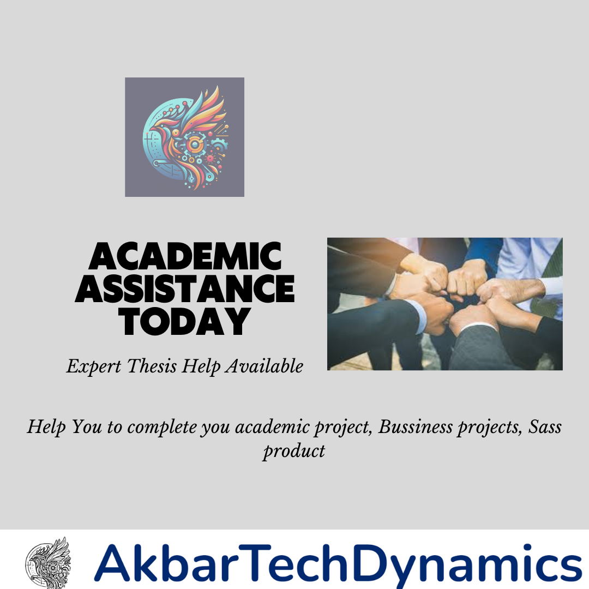

Struggling with Your Thesis? Our Experts Provide Personalized Support to Ensure You Meet All Requirements. Get in Touch Today!
Introduction
Writing a thesis can be one of the most challenging tasks in your academic journey. It requires extensive research, critical thinking, and a clear, structured presentation of your findings. Struggling with your thesis? Our experts provide personalized support to ensure you meet all requirements. Get in touch today! Let's explore how personalized expert support can make the thesis-writing process smoother and more successful.
The Challenges of Writing a Thesis
Understanding the Complexity
A thesis is a significant academic document that demonstrates your knowledge, research skills, and ability to contribute to your field of study. The complexity of a thesis lies in its comprehensive nature, requiring you to delve deep into a specific topic and present your findings in a coherent, well-structured manner.
Common Challenges Faced by Students:
- Topic Selection: Choosing a suitable and impactful topic.
- Research: Conducting extensive and relevant research.
- Organization: Structuring the thesis logically.
- Writing: Ensuring clarity, coherence, and academic rigor.
- Time Management: Balancing research, writing, and revisions within deadlines.
- Adherence to Guidelines: Meeting all academic and formatting requirements.
How Personalized Support Can Help
Expert Guidance on Topic Selection
Selecting the right topic is crucial for a successful thesis. Our experts can help you choose a topic that is both interesting and feasible, aligning with your academic goals and the requirements of your institution.
Assistance with Research
Effective research is the foundation of a strong thesis. Our experts provide guidance on sourcing reliable academic materials, conducting literature reviews, and organizing your research findings.
Structured Writing Support
Writing a thesis involves presenting your research in a clear and structured manner. Our experts assist you in outlining your thesis, ensuring that each section flows logically and supports your overall argument.
Feedback and Revisions
Receiving constructive feedback is essential for improving your work. Our experts provide detailed feedback on your drafts, helping you refine your arguments, improve clarity, and adhere to academic standards.
Key Components of a Successful Thesis
Introduction
The introduction sets the stage for your thesis, presenting your research question, objectives, and the significance of your study. It should engage the reader and provide a clear roadmap of what to expect.
Literature Review
The literature review surveys existing research related to your topic. It highlights gaps in the current knowledge and demonstrates how your research contributes to the field.
Methodology
The methodology section outlines the research methods you used to collect and analyze data. It should be detailed enough to allow replication of your study and justify your chosen methods.
Results
The results section presents the findings of your research. It should be clear and concise, using tables, charts, and figures where appropriate to illustrate key points.
Discussion
The discussion interprets your findings, explaining their implications and how they relate to your research question. It should also address any limitations of your study and suggest areas for future research.
Conclusion
The conclusion summarizes your research and its significance. It should restate your research question, highlight key findings, and reflect on the broader implications of your study.
References
Accurate and comprehensive referencing is crucial in a thesis. Ensure all sources are cited correctly according to the required academic style.
Benefits of Expert Thesis Support
Personalized Approach
Every student and thesis is unique. Our experts offer personalized support tailored to your specific needs, academic level, and research field.
Time Efficiency
With expert guidance, you can save time on research, writing, and revisions. This allows you to focus on producing high-quality work without feeling overwhelmed.
Improved Quality
Expert support ensures your thesis is well-researched, clearly written, and meets all academic standards. This enhances the quality of your work and increases your chances of success.
Stress Reduction
Writing a thesis can be stressful. Our experts provide the reassurance and support you need to stay focused and motivated throughout the process.
Testimonials from Satisfied Students
John M., PhD Candidate
"Working with a thesis expert was a game-changer for me. Their guidance on structuring my research and writing was invaluable. I couldn't have completed my thesis without their support."
Sarah L., Master's Student
"I was struggling to choose a topic for my thesis, but my advisor helped me find a direction that was both interesting and feasible. Their feedback on my drafts was always constructive and helped me improve my work significantly."
Getting Started with Our Thesis Support Services
Initial Consultation
Start with an initial consultation to discuss your thesis topic, objectives, and any specific challenges you are facing. This helps us understand your needs and tailor our support accordingly.
Customized Plan
Based on the initial consultation, we develop a customized support plan that outlines the assistance you will receive at each stage of your thesis.
Ongoing Support
Receive ongoing support from our experts, including regular check-ins, feedback on drafts, and guidance on research and writing.
Final Review
Before submission, our experts conduct a final review of your thesis to ensure it meets all academic and formatting requirements.
Conclusion
Struggling with your thesis? Our experts provide personalized support to ensure you meet all requirements. Get in touch today and take the first step towards a successful thesis journey. With tailored guidance, constructive feedback, and expert assistance, you can overcome the challenges of thesis writing and achieve your academic goals.